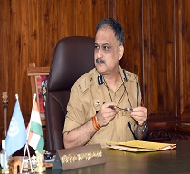

Our Mission

-
To achieve the highest standards of the smooth and safe flow of traffic
-
Inculcate a sense of discipline amongst road users and educate citizens including school children on road safety.
-
Develop a sense of responsiveness and sensitivity to the needs of the public.
-
Prevent and reduce accidents.
-
Effective enforcement of traffic regulations.
-
Develop the human resources of traffic police.